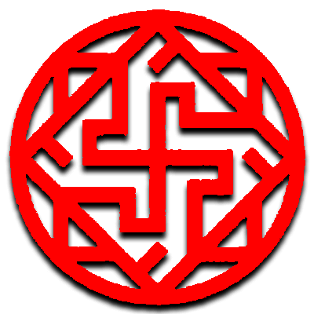
Норвежская мифология
В скандинавской мифологии валькирия - одна из множества женских фигур, которые выбирают тех, кто может погибнуть в битве, и тех, кто может выжить. Выбирая среди половины погибших в битве (другая половина попадает в загробное поле богини Фрейи Фолквангр ), валькирии приводят своих избранных в загробный зал убитых, Валгаллу, управляемую богом Одином. Там умершие воины становятся эйнхерий . Когда эйнхерий не готовится к событиям Рагнарёка, валькирии несут им мед. Валькирии также появляются как возлюбленные героев и других смертных, где их иногда описывают как дочерей королевской семьи, иногда в сопровождении воронов, а иногда в связях с лебедями или лошадьми.
Побочный квест
Из всех битв с боссами в игре Валькирии считаются самыми опасными, превосходя даже Бальдура с его печально известной неуязвимостью с точки зрения сложности.
Валькирии - это побочный квест в игре, и их можно найти в девяти разных местах. Первые восемь локаций открываются после прохождения основного сюжета, но к ним все еще можно получить доступ, обнаружив их. Вам также понадобится долото, чтобы открыть Скрытые палаты Одина и шесть валькирий, которые можно получить во время сюжета. Рекомендуется завершить основное путешествие, прежде чем сразиться с ними, так как они сильные воины.
К девятой локации Валькирий можно будет получить доступ только после того, как вы победите остальные восемь и передадите их шлемы Совету Валькирий, на северной стороне Озера Девяти. Это вызовет Королеву Валькирий.
У каждой валькирии в God of War есть свой стиль боя, и вам нужно будет соответствующим образом адаптироваться. Все они обладают высокой стойкостью и устойчивы к ожогам, морозу, ударам, слабости и ярости. Будьте готовы к долгой, затяжной схватке.
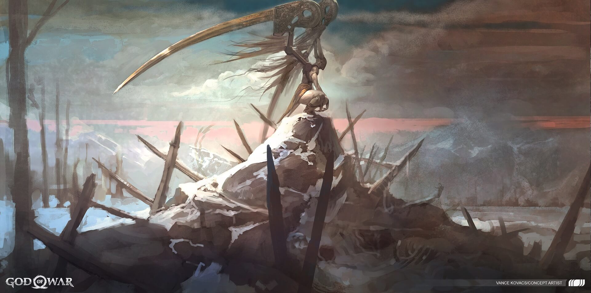
Гейрдрифул
Гейрдрифул - одна из девяти испорченных валькирий . Она находится в тайной комнате Предгорья в Мидгарде.
Гейрдрифул (имя, означающее «Метатель копья») - имя валькирии в скандинавской мифологии, о ней ничего не известно, но она найдена в списке валькирий в Нафнагулуре.
Бой
Общую тактику Geirdriful можно охарактеризовать как жестокое введение в заблуждение. Она окутывала местность туманом, закрывая обзор, и многие из ее ходов можно было легко спутать друг с другом; она предпочитает дистанцироваться от Кратоса, максимально используя свой туман и предпочитая атаковать мощными снарядами или смертоносным ударом крыльев. Напротив, ее запас здоровья и сопротивление ошеломлению среди валькирий умеренные.
Когда Гейрдирфул поднимается в воздух с распростертыми крыльями, она собирается стряхнуть с себя непонятный туман. Этот ход нанесет урон Кратосу независимо от его положения, и щит Стража не сможет защитить от него. Однако своевременное уклонение может предотвратить урон. Игрок может попытаться помешать Гейрдирфул сотворить туман, атаковав ее мощным ударом, который может достичь ее в воздухе, таким как Пробуждение Левиафана.
Если туман успешно наложен, игроки могут полагаться на звуковой сигнал, чтобы угадать следующий ход Валькирии. Некоторые из ее атак также излучают золотое свечение, что делает их довольно заметными, несмотря на укрытие. Туман будет действовать примерно 15 секунд и рассеется. Более смелые игроки, если им повезет, могут попытаться броситься к Гейрдрифуль, чтобы быстро поразить и оглушить ее, не позволяя Валькирии в полной мере воспользоваться своим туманом.
С помощью своих крыльев она могла выполнять комбо «Рубящий удар», «Удар» и, в редких случаях, «Циклон». Однако эти три движения редко связаны друг с другом, поскольку она использует свою рукопашную атаку только для того, чтобы застать Кратоса врасплох после ее атак снарядами. Трудно, если не невозможно, сказать, какой из этих трех приемов она использовала бы, стремясь к Кратосу, поэтому игроки могут захотеть установить загрузку, которая может смягчить восстановление после возможной ошибки при попытке противостоять ее рукопашному бою.
Ее метательные атаки включают в себя блокируемые перьевые ножи (наземные), которые она будет использовать в перерывах между повторными шагами. А также спектральные самонаводящиеся снаряды (блокируемые) и метание дискового лезвия (неблокируемое) в воздухе.
Гейрдирфул может соединить свои воздушные снаряды с захватом, в котором она налетает на Кратоса, как Сова. Эта атака может легко означать верную смерть в GMGOW. Верный способ избежать этого движения - уклониться в сторону, находясь достаточно далеко от исходной точки. Любые чары, улучшающие дистанцию уклонения, могут сделать уклонение с близкого расстояния намного безопаснее.
Наконец, она может использовать свою Косы, чтобы создать энергетическую волну, которая царапает землю на своем пути, чтобы поразить Кратоса. Это не отслеживает движения Кратоса, и от него легко уклониться, но он наносит огромный урон (легко мгновенная смерть в GMGOW) и вызывает обморожение, замедляя Кратоса и заставляя его легко умирать от последующих атак, если он даже выжил.
Когда Гейрдирфул поднимается в воздух с распростертыми крыльями, она собирается стряхнуть с себя непонятный туман. Этот ход нанесет урон Кратосу независимо от его положения, и щит Стража не сможет защитить от него. Однако своевременное уклонение может предотвратить урон. Игрок может попытаться помешать Гейрдирфул сотворить туман, атаковав ее мощным ударом, который может достичь ее в воздухе, таким как Пробуждение Левиафана.
Если туман успешно наложен, игроки могут полагаться на звуковой сигнал, чтобы угадать следующий ход Валькирии. Некоторые из ее атак также излучают золотое свечение, что делает их довольно заметными, несмотря на укрытие. Туман будет действовать примерно 15 секунд и рассеется. Более смелые игроки, если им повезет, могут попытаться броситься к Гейрдрифуль, чтобы быстро поразить и оглушить ее, не позволяя Валькирии в полной мере воспользоваться своим туманом.
С помощью своих крыльев она могла выполнять комбо «Рубящий удар», «Удар» и, в редких случаях, «Циклон». Однако эти три движения редко связаны друг с другом, поскольку она использует свою рукопашную атаку только для того, чтобы застать Кратоса врасплох после ее атак снарядами. Трудно, если не невозможно, сказать, какой из этих трех приемов она использовала бы, стремясь к Кратосу, поэтому игроки могут захотеть установить загрузку, которая может смягчить восстановление после возможной ошибки при попытке противостоять ее рукопашному бою.
Ее метательные атаки включают в себя блокируемые перьевые ножи (наземные), которые она будет использовать в перерывах между повторными шагами. А также спектральные самонаводящиеся снаряды (блокируемые) и метание дискового лезвия (неблокируемое) в воздухе.
Гейрдирфул может соединить свои воздушные снаряды с захватом, в котором она налетает на Кратоса, как Сова. Эта атака может легко означать верную смерть в GMGOW. Верный способ избежать этого движения - уклониться в сторону, находясь достаточно далеко от исходной точки. Любые чары, улучшающие дистанцию уклонения, могут сделать уклонение с близкого расстояния намного безопаснее.
Наконец, она может использовать свою Косы, чтобы создать энергетическую волну, которая царапает землю на своем пути, чтобы поразить Кратоса. Это не отслеживает движения Кратоса, и от него легко уклониться, но он наносит огромный урон (легко мгновенная смерть в GMGOW) и вызывает обморожение, замедляя Кратоса и заставляя его легко умирать от последующих атак, если он даже выжил.
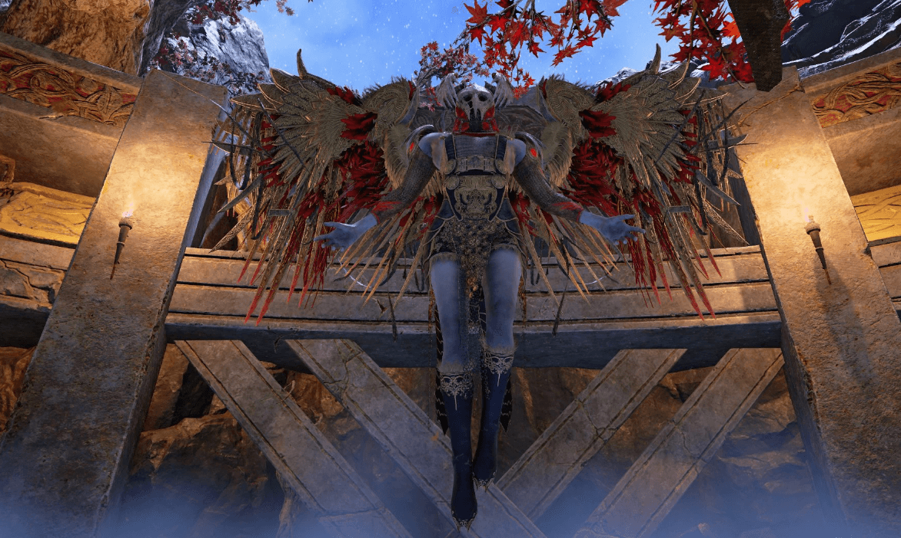
Эйр
В скандинавской мифологии Эйр - богиня и / или валькирия, связанные с медицинскими навыками. Эйр засвидетельствован в Поэтической Эдде , составленной в 13 веке из более ранних традиционных источников; Проза Edda , написанный в 13 - ом столетии Снорри Стерлузоном; и в поэзии скальдов, включая руническую надпись из Бергена, Норвегия, около 1300 года. Ученые предположили, относятся ли эти три источника к одной и той же фигуре, и спорят, могла ли Эйр изначально быть богиней исцеления и / или валькирией.
Бой
Среди 9 пойманных валькирий борьба с Эйром - это скорее испытание на своевременную сдержанность и последовательность, чем на умение и быструю реакцию. В то время как игроки могут потерпеть неудачу против ее сестер из-за того, что они недостаточно быстрые, Эйр убивает тех, кто напивается их скоростью, и безрассудно ускоряет их комбо.
Эйр может использовать свои крылья с лезвиями для базового комбо, но она не может использовать сложные маневры, такие как Wing Thrust или Cyclone. Вместо того, чтобы закончить свое комбо мощной последующей атакой, как большинство ее сестер, она завершает тем, что прикрывает себя крыльями, ожидая контратаки. Если ударить ее дважды или позволить ей оставаться в стойке слишком долго, она начнет быструю и неприметно смертельную атаку, способную истощить 3/4 здоровья Кратоса в GMGOW. Она также может защитить себя без предварительного комбо.
Это действие защиты считается блоком, поэтому оно восприимчиво к разрыву блока Guardian Shield (Double Tap L1). Знание этого жизненно важно для эффективной борьбы с Эйр, так как у нее огромный запас здоровья, и в противном случае у нее не останется много возможностей.
Помимо крыльев с лезвиями, Эйр может использовать булаву Валькирии для выполнения комбо Удар и Удар. Движение фунта - это АоЕ, и от него следует уклоняться (уклонение назад лицом к Эйр), в то время как замах выполняется по диагонали от ее верхнего левого угла к ее правому низу; этого можно избежать, уклонившись от нее слева (справа от Кратоса).
Наконец, она может подняться в небо и провести массивную AoE-атаку, которая будет массивной (вероятно, фатальной в GMGOW), которую невозможно заблокировать или уклониться. Единственный способ избежать этой атаки - это заставить ее вздрогнуть во время закручивания; бросьте в нее Левиафана или позвольте Атрею выстрелить в нее (стрелы Атрея вряд ли повлияют на нее в GMGOW).
Эйр может использовать свои крылья с лезвиями для базового комбо, но она не может использовать сложные маневры, такие как Wing Thrust или Cyclone. Вместо того, чтобы закончить свое комбо мощной последующей атакой, как большинство ее сестер, она завершает тем, что прикрывает себя крыльями, ожидая контратаки. Если ударить ее дважды или позволить ей оставаться в стойке слишком долго, она начнет быструю и неприметно смертельную атаку, способную истощить 3/4 здоровья Кратоса в GMGOW. Она также может защитить себя без предварительного комбо.
Это действие защиты считается блоком, поэтому оно восприимчиво к разрыву блока Guardian Shield (Double Tap L1). Знание этого жизненно важно для эффективной борьбы с Эйр, так как у нее огромный запас здоровья, и в противном случае у нее не останется много возможностей.
Помимо крыльев с лезвиями, Эйр может использовать булаву Валькирии для выполнения комбо Удар и Удар. Движение фунта - это АоЕ, и от него следует уклоняться (уклонение назад лицом к Эйр), в то время как замах выполняется по диагонали от ее верхнего левого угла к ее правому низу; этого можно избежать, уклонившись от нее слева (справа от Кратоса).
Наконец, она может подняться в небо и провести массивную AoE-атаку, которая будет массивной (вероятно, фатальной в GMGOW), которую невозможно заблокировать или уклониться. Единственный способ избежать этой атаки - это заставить ее вздрогнуть во время закручивания; бросьте в нее Левиафана или позвольте Атрею выстрелить в нее (стрелы Атрея вряд ли повлияют на нее в GMGOW).
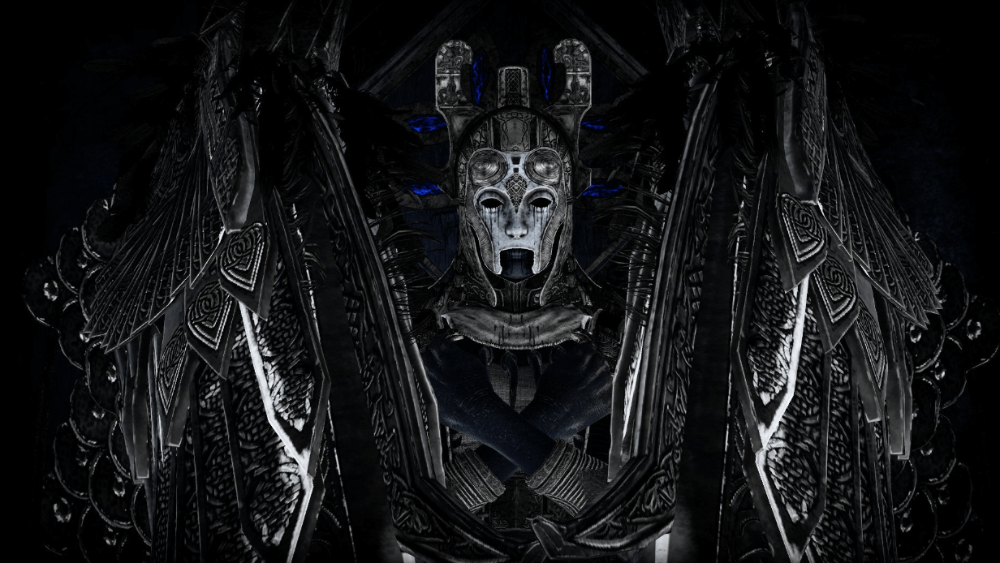
Кара
В эпилоге подробно говорится о том, что «существовала вера в языческую религию, которую мы теперь считаем сказкой старых жен, что люди могут перевоплощаться», и что покойная валькирия Сигрун и ее мертвая любовь Хельги Хандингсбейн считались возрожденными как еще одна пара Хельги и валькирии; Хельги в роли Хельги Хаддингьяскати и Сигрун в роли дочери Хальвдана - валькирии Кара. Согласно эпилогу, дополнительную информацию об этих двоих можно найти в произведении Káruljó, которое не сохранилось.
Бой
Кара - любопытный случай, и она во всех смыслах и целях является уникальной валькирией в бою; даже Сигрун не использует свою уникальную способность вызывать драугров для помощи.
Кара, как индивидуальная Валькирия, хрупка и некомпетентна; у нее небольшой запас здоровья, она легко сопротивляется базовым ударам Кратоса и имеет очень маленький набор приемов.
Ее рукопашная атака состоит только из четырехкратного удара крыльями, который, в отличие от ее сестер, плохо отслеживает Кратоса и атаки Косы, при которой она поднимается в воздух перед тем, как броситься на Кратоса; атака, которая может быть легко отражена с помощью Guardian Shield.
Ее дальняя атака состоит только из залпа снарядов, которые можно заблокировать, и выстрела энергетического кольца, от которого нужно увернуться. Ничто из этого не особенно опасно или трудно предвидеть.
Ее козырная карта заключается в ее способности вызвать в битву отряд из 4 драугров; она будет призывать больше по мере того, как битва продолжается, независимо от того, отбрасывают ли игроки предыдущие или нет. Эта способность может быть либо небольшим препятствием, либо жесткой стеной прогресса в зависимости от сложности. В большинстве трудностей эти драугры не представляют особой сложности, особенно для хорошо экипированных игроков. В GMGOW, где враги могут быть усилены и представлять значительно более сложные задачи (а также порождаться на более высоком уровне по умолчанию), борьба с Кара может быть чрезвычайно сложной, поскольку драугры могут легко восполнить ее недостаток боевого мастерства.
В GMGOW рекомендуется использовать высокий кулдаун, так как игроки могут захотеть использовать AoE-рунические атаки, чтобы быстро избавиться от ее призыва. Один угол ее комнаты (сторона входа противников) - это, казалось бы, бездонная яма, в которую можно бросить драугров для легкого убийства. Ключ никогда не загонять ее в угол в этой части комнаты, потому что она всегда будет дистанцироваться перед вызовом; загоняя ее в угол где-нибудь еще, очень вероятно, что она вызовет драугров возле ямы. Когда появятся драугры, используйте руническую атаку AoE с сильной толкающей силой, чтобы бросить ее драугров в яму, это оставит ее без драугров, которые могли бы помочь, или нескольких раненых. Чтобы эта тактика сработала, игрок, вероятно, должен воздержаться от использования самой сильной рунической атаки только против Кары и сохранить ее до того момента, когда она начнет призывать.
Кара, как индивидуальная Валькирия, хрупка и некомпетентна; у нее небольшой запас здоровья, она легко сопротивляется базовым ударам Кратоса и имеет очень маленький набор приемов.
Ее рукопашная атака состоит только из четырехкратного удара крыльями, который, в отличие от ее сестер, плохо отслеживает Кратоса и атаки Косы, при которой она поднимается в воздух перед тем, как броситься на Кратоса; атака, которая может быть легко отражена с помощью Guardian Shield.
Ее дальняя атака состоит только из залпа снарядов, которые можно заблокировать, и выстрела энергетического кольца, от которого нужно увернуться. Ничто из этого не особенно опасно или трудно предвидеть.
Ее козырная карта заключается в ее способности вызвать в битву отряд из 4 драугров; она будет призывать больше по мере того, как битва продолжается, независимо от того, отбрасывают ли игроки предыдущие или нет. Эта способность может быть либо небольшим препятствием, либо жесткой стеной прогресса в зависимости от сложности. В большинстве трудностей эти драугры не представляют особой сложности, особенно для хорошо экипированных игроков. В GMGOW, где враги могут быть усилены и представлять значительно более сложные задачи (а также порождаться на более высоком уровне по умолчанию), борьба с Кара может быть чрезвычайно сложной, поскольку драугры могут легко восполнить ее недостаток боевого мастерства.
В GMGOW рекомендуется использовать высокий кулдаун, так как игроки могут захотеть использовать AoE-рунические атаки, чтобы быстро избавиться от ее призыва. Один угол ее комнаты (сторона входа противников) - это, казалось бы, бездонная яма, в которую можно бросить драугров для легкого убийства. Ключ никогда не загонять ее в угол в этой части комнаты, потому что она всегда будет дистанцироваться перед вызовом; загоняя ее в угол где-нибудь еще, очень вероятно, что она вызовет драугров возле ямы. Когда появятся драугры, используйте руническую атаку AoE с сильной толкающей силой, чтобы бросить ее драугров в яму, это оставит ее без драугров, которые могли бы помочь, или нескольких раненых. Чтобы эта тактика сработала, игрок, вероятно, должен воздержаться от использования самой сильной рунической атаки только против Кары и сохранить ее до того момента, когда она начнет призывать.
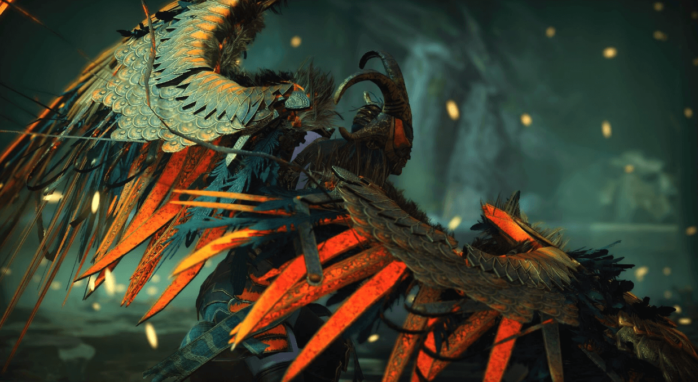
Рота
В скандинавской мифологии Рота - это валькирия. Rota засвидетельствован в главе 36 Эдде книги Gylfaginning , где она упоминается вместе с валькирии Gunnr и Skuld, и три описаны как «всегда [верхом] , чтобы выбрать , кто должен быть убит и управлять убийства.» В противном случае Рота появляется в двух кеннингах, один от Эгилла Скаллагримссона и один от Халльфрера вандрдаскальда. Были предложены теории о возможном появлении Роты в Gesta Danorum и значении ее имени.
Бой
Роту относительно легко предсказать, но именно сложность совершения своевременных уклонений последовательно и в быстрой последовательности действительно делает ее столкновение трудным. Рота часто использует схватку, что, если у игрока нет звездной защиты и здоровья, означает легкое поражение при попадании. В GMGOW ее захваты наносят настолько большой урон, что применение снаряжения для здоровья и защиты от нее становится абсурдно непрактичным. Собственный запас здоровья и сопротивление оглушению у Роты средний.
Рота может использовать и Swooping, и Plummeting до трех раз подряд, и все ее атаки обычно приводят к одному из этих двух захватов. Ее стремительный захват часто выполняется после атаки крыла Циклона, в то время как ее стремительный захват обычно следует за ее воздушными снарядами, и она может даже обойтись без предварительных движений. Если Рота каким-то образом не выполнит захват трижды, она может отступить и выполнить быструю колющую атаку, которая, хотя и не такая мощная, может убить Кратоса при низком уровне здоровья.
Захваты Роты обходят броню Spartan Rage , поэтому полагаться на эту способность против нее не рекомендуется.
Рота также может сделать 4 удара и блокируемый удар крыльями, за которым она может последовать неблокируемым ударом булавы (который приводит к Падающему захвату) или ударом косы, которым Кратос может противостоять щитом Хранителя.
Рота также может выполнять блокируемую воздушную энергетическую атаку самонаведения, которую она всегда выполняет с помощью парящих захватов.
Рота может использовать и Swooping, и Plummeting до трех раз подряд, и все ее атаки обычно приводят к одному из этих двух захватов. Ее стремительный захват часто выполняется после атаки крыла Циклона, в то время как ее стремительный захват обычно следует за ее воздушными снарядами, и она может даже обойтись без предварительных движений. Если Рота каким-то образом не выполнит захват трижды, она может отступить и выполнить быструю колющую атаку, которая, хотя и не такая мощная, может убить Кратоса при низком уровне здоровья.
Захваты Роты обходят броню Spartan Rage , поэтому полагаться на эту способность против нее не рекомендуется.
Рота также может сделать 4 удара и блокируемый удар крыльями, за которым она может последовать неблокируемым ударом булавы (который приводит к Падающему захвату) или ударом косы, которым Кратос может противостоять щитом Хранителя.
Рота также может выполнять блокируемую воздушную энергетическую атаку самонаведения, которую она всегда выполняет с помощью парящих захватов.
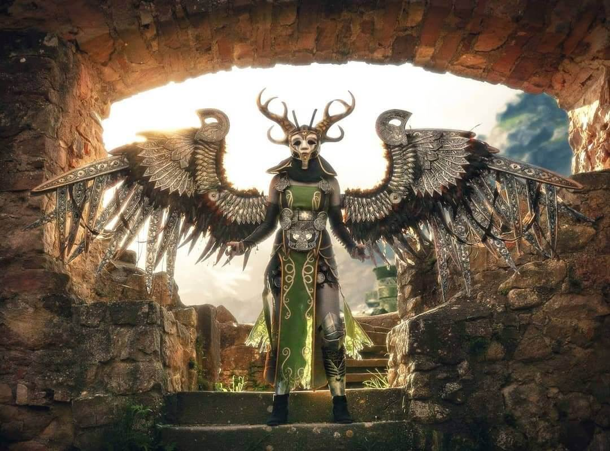
Олрун
Олрун - валькирия и девушка-лебедь, дочь Кьярра из Валланда. Она была спутницей Хладгура Сванвита и Хервёра альвитра, дочерей короля Хлёдвера. Однажды утром, когда они пряли лен на берегу озера, их встретили братья Слагфидр, Эгиль и Велундр. Братья привели девушек в свое жилище, где Эгиль взял Олруна в жены. Через несколько лет она и две другие валькирии улетели на битву и больше не вернулись. Эгиль отправился на восток искать ее.
Бой
Вся боевая тактика Олруна заключается в том, чтобы вращаться вокруг Кратоса и внезапно приближаться к нему ослепительно быстрой атакой. Будет ли ее столкновение сложным или нет, зависит от знания игроком ее быстрой, но довольно линейной схемы атаки. Она может похвастаться умеренным запасом здоровья и устойчивостью к оглушению среди валькирий.
Одна из удобных стратегий сражения с Олрун - не подходить к ней и не отвечать после того, как она подойдет к вам, с помощью одной из двух атак: Удар крыльями или Падающий захват. Чтобы это сработало, Кратос должен сохранять позицию в центре арены и перемещаться только для того, чтобы уклоняться от указанных двух атак.
Олрун будет поддерживать дистанцию с Кратосом, мгновенно обстреливая и нанося удары. Игроки могут захотеть постоянно охранять, пока она смотрит на нее, пока она не начнет неблокируемую атаку. Это может показаться сложным, но схема довольно проста:
Одна из удобных стратегий сражения с Олрун - не подходить к ней и не отвечать после того, как она подойдет к вам, с помощью одной из двух атак: Удар крыльями или Падающий захват. Чтобы это сработало, Кратос должен сохранять позицию в центре арены и перемещаться только для того, чтобы уклоняться от указанных двух атак.
Олрун будет поддерживать дистанцию с Кратосом, мгновенно обстреливая и нанося удары. Игроки могут захотеть постоянно охранять, пока она смотрит на нее, пока она не начнет неблокируемую атаку. Это может показаться сложным, но схема довольно проста:
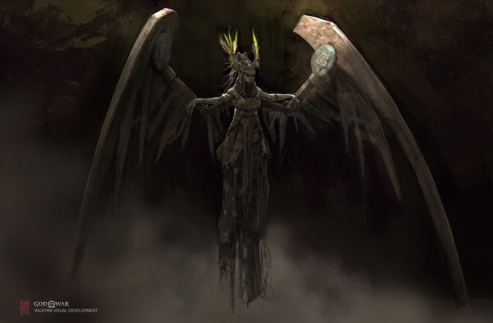
Гондул
В скандинавской мифологии Гендул (древнескандинавский « владеющий жезлом») - это валькирия. Гендул засвидетельствован в Heimskringla, Sörla áttr и является норвежским шармом 14 века. Кроме того, Гендул фигурирует в списке валькирий в поэме «Поэтическая Эдда» « Völuspá», в обоих списках Nafnaulur, найденных в «Прозаической Эдде», и среди валькирий, перечисленных в Darraarljó .
Бой
Гондул, пожалуй, один из самых грозных врагов в игре, даже по сравнению со своими сестрами. У нее не только значительный запас здоровья, но и своя собственная версия смертоносной тактики, используемой несколькими другими валькириями, каждая из которых наносит очень большой урон и требует точного и пунктуального принятия решений, страдая от ее способности пространственного саботажа. С точки зрения непредсказуемости и набора движений она, возможно, уступает только Сигрун.
Область, на которой сражается Гондул, довольно просторна, но это лишь едва компенсирует агрессивность, которой Гондул руководит в бою, и ее способность создавать огненные опасности на полу.
Фирменная сила Гондул - ее ограниченный пирокинез; она может заставить огненные шары падать с неба в определенное место и заставить это место гореть затяжным огнем; превратив его в зону, лишающую жизни. Она использовала бы это, чтобы создать ряд огненных опасностей на прямой линии между ней и Кратосом. Урон от этой наземной опасности не вызывает нареканий, и в GMGOW они могут съесть полоску здоровья Кратоса довольно быстро, достаточно, чтобы игроки потерпели неудачу всего из одной дополнительной ошибки. Несмотря на то, что от этого можно легко увернуться в сторону, игроки должны быть осторожны с направлением, в котором они выбрали уклонение, поскольку опасность возгорания будет сохраняться в течение некоторого времени; сторона арены, на которую игрок уклоняется, скорее всего, будет тем местом, где ему придется выдержать натиск Гондула в течение следующей минуты.
Противодействие возможному продолжению ее атаки метеоритом, вероятно, одна из самых сложных вещей в ее столкновении. Если Гондул шагает вправо (влево от Кратоса), это означает, что она вот-вот приблизится и нанесет обычный удар крыльями, который следует заблокировать. Если она делает шаг влево (вправо Кратоса), это означает, что она собирается сблизиться с уколом своим правым крылом; от этого следует уклониться вправо. Если она наступает прямо на Кратоса, это означает, что она собирается совершить Циклон своим крылом (блокируемым) и последует за ним, взлетев в небо и проведя атаку-захват, которая требует уклонения в любом направлении с правильным темпом и временем; движение как можно дальше от точки A до B ничего не делает против ее движения Grappling, так как при этом она отслеживает Кратоса, ключ в том, чтобы увернуться в момент, когда она падает с неба, и временное окно довольно маленькое. Также она всегда стреляет в Кратоса одним метеором перед падением, что может вызвать у игрока панику и заставить увернуться в неподходящее время.
Гондул также может использовать свое перо в качестве снарядов, подобно метательным ножам (блокируемым), она может сделать это после обстрела назад.
Гондул, кажется, применяет ту же самую тактику Булавы с Эйр , но она могла бы также добавить Удар Булавой в качестве завершающего удара к своей атаке клинком крыльев. Просто помните, что в отличие от Эйра, Гондул может повлиять на доступность безопасного места в бою, а атаки Булавы требуют некоторого пространства, по которому можно двигаться.
Область, на которой сражается Гондул, довольно просторна, но это лишь едва компенсирует агрессивность, которой Гондул руководит в бою, и ее способность создавать огненные опасности на полу.
Фирменная сила Гондул - ее ограниченный пирокинез; она может заставить огненные шары падать с неба в определенное место и заставить это место гореть затяжным огнем; превратив его в зону, лишающую жизни. Она использовала бы это, чтобы создать ряд огненных опасностей на прямой линии между ней и Кратосом. Урон от этой наземной опасности не вызывает нареканий, и в GMGOW они могут съесть полоску здоровья Кратоса довольно быстро, достаточно, чтобы игроки потерпели неудачу всего из одной дополнительной ошибки. Несмотря на то, что от этого можно легко увернуться в сторону, игроки должны быть осторожны с направлением, в котором они выбрали уклонение, поскольку опасность возгорания будет сохраняться в течение некоторого времени; сторона арены, на которую игрок уклоняется, скорее всего, будет тем местом, где ему придется выдержать натиск Гондула в течение следующей минуты.
Противодействие возможному продолжению ее атаки метеоритом, вероятно, одна из самых сложных вещей в ее столкновении. Если Гондул шагает вправо (влево от Кратоса), это означает, что она вот-вот приблизится и нанесет обычный удар крыльями, который следует заблокировать. Если она делает шаг влево (вправо Кратоса), это означает, что она собирается сблизиться с уколом своим правым крылом; от этого следует уклониться вправо. Если она наступает прямо на Кратоса, это означает, что она собирается совершить Циклон своим крылом (блокируемым) и последует за ним, взлетев в небо и проведя атаку-захват, которая требует уклонения в любом направлении с правильным темпом и временем; движение как можно дальше от точки A до B ничего не делает против ее движения Grappling, так как при этом она отслеживает Кратоса, ключ в том, чтобы увернуться в момент, когда она падает с неба, и временное окно довольно маленькое. Также она всегда стреляет в Кратоса одним метеором перед падением, что может вызвать у игрока панику и заставить увернуться в неподходящее время.
Гондул также может использовать свое перо в качестве снарядов, подобно метательным ножам (блокируемым), она может сделать это после обстрела назад.
Гондул, кажется, применяет ту же самую тактику Булавы с Эйр , но она могла бы также добавить Удар Булавой в качестве завершающего удара к своей атаке клинком крыльев. Просто помните, что в отличие от Эйра, Гондул может повлиять на доступность безопасного места в бою, а атаки Булавы требуют некоторого пространства, по которому можно двигаться.
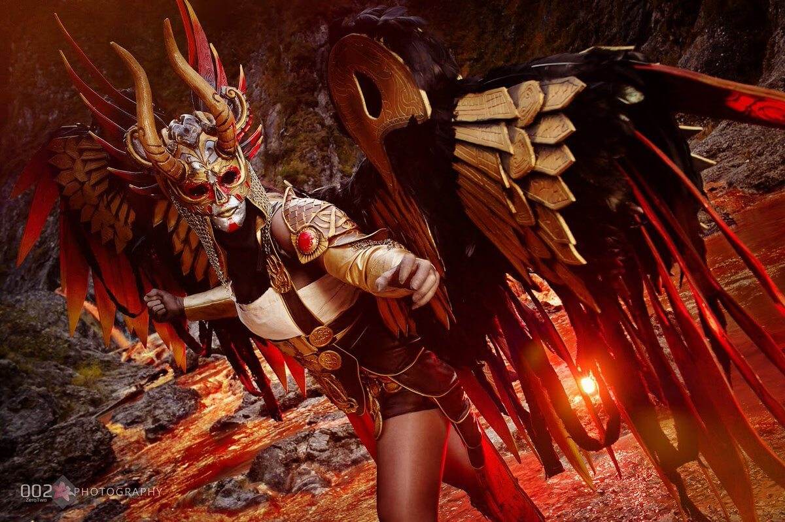
Хильдр
В скандинавской мифологии Хильдр (древнескандинавское «битва») - это валькирия. Хильдра засвидетельствована в Прозаической Эдде как дочь Хёгни и жена Хедина в Хьянингавиге . У нее была сила оживлять мертвых на полях сражений и использовать ее для поддержания вечной битвы между Хедином и Хёгни.
Хильдр также упоминается вместе с другими валькириями в Völuspá , Darraarljó и других древнескандинавских стихотворениях. Древнескандинавское слово hildr - это существительное нарицательное, означающее «битва», и не всегда ясно, когда поэты имели в виду валькирию как олицетворение битвы.
Бой
Битву Хильдра можно рассматривать как противоположность битвы Гондула. В то время как ее огненная сестра сражается в очень доступной и довольно благоприятной среде, которая компенсирует чрезвычайно смертоносного противника, Хильдр - довольно управляемый противник, который имеет преимущество самой опасной арены среди всех валькирий. На самом деле, самая большая проблема с Хильдр - найти свою тюрьму в рандомизированном лабиринте Ивальди, сохранив при этом достаточно здоровья и шкалы тумана, чтобы фактически закончить бой. Что касается самой Валькирии, Хильдр наделена средним сопротивлением оглушению, но плохим здоровьем/защитой.
Следует отметить, что смерть против Хильдра будет означать, что игроку придется перезапускаться от входа в лабиринт, поэтому полагаться на метод проб и ошибок было бы излишне напряженным. Игроки должны приходить к ней решительными и подготовленными, желательно с 4 из 5 возможных предметов снаряжения Нильфхейма. Если игроки не хотят рисковать потерять много здоровья на пути к ней, они должны изо всех сил игнорировать и уклоняться от врагов, которые появляются в лабиринте, и продолжать по очереди, пока не найдут ее тюрьму.
Набор движений Хильдра не совсем смертельный; ее фирменная способность - использовать криомантию, чтобы быстро стрелять ледяными осколками в Кратоса, которые можно заблокировать. Она завершит эту атаку, выпустив огромный кусок ледяного шипа, от которого нужно увернуться. Хильдр всегда отдаляется от Кратоса перед тем, как использовать этот прием, и ее ледяные способности сильно упадут.
Хильдр также может использовать свою Косы, чтобы послать неблокируемый энергетический взрыв, который также накладывает Заморозку на Кратоса при ударе, а затем наносит удар косой крупным планом, который можно отразить с помощью Щита Стража.
Время от времени она может подняться в небо, чтобы выполнить захват с парящим захватом, что является ее единственным возможным приемом с одного удара в GMGOW, но она вряд ли последует за ним какой-либо атакой.
Следует отметить, что смерть против Хильдра будет означать, что игроку придется перезапускаться от входа в лабиринт, поэтому полагаться на метод проб и ошибок было бы излишне напряженным. Игроки должны приходить к ней решительными и подготовленными, желательно с 4 из 5 возможных предметов снаряжения Нильфхейма. Если игроки не хотят рисковать потерять много здоровья на пути к ней, они должны изо всех сил игнорировать и уклоняться от врагов, которые появляются в лабиринте, и продолжать по очереди, пока не найдут ее тюрьму.
Набор движений Хильдра не совсем смертельный; ее фирменная способность - использовать криомантию, чтобы быстро стрелять ледяными осколками в Кратоса, которые можно заблокировать. Она завершит эту атаку, выпустив огромный кусок ледяного шипа, от которого нужно увернуться. Хильдр всегда отдаляется от Кратоса перед тем, как использовать этот прием, и ее ледяные способности сильно упадут.
Хильдр также может использовать свою Косы, чтобы послать неблокируемый энергетический взрыв, который также накладывает Заморозку на Кратоса при ударе, а затем наносит удар косой крупным планом, который можно отразить с помощью Щита Стража.
Время от времени она может подняться в небо, чтобы выполнить захват с парящим захватом, что является ее единственным возможным приемом с одного удара в GMGOW, но она вряд ли последует за ним какой-либо атакой.
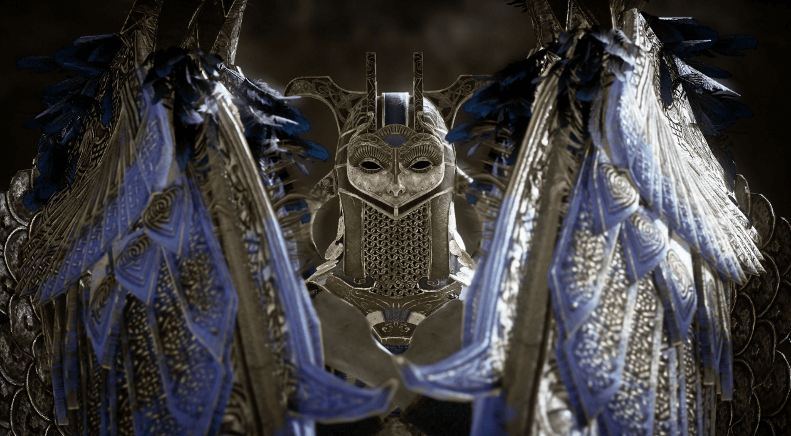
Ганнр
Один из девяти оскверненных валькирий и дополнительных побочных боссов в God of War . Находясь в Трупе Тамура, игра направляет игрока сначала сразиться с этой конкретной Валькирией и не без оснований. Ганнр считается самым легким из всех девяти противников и является отличной тренировкой для предстоящих трудных сражений.
Бой
Гуннр - довольно легкая Валькирия, чтобы победить, возможно, из-за того, что она, вероятно, первая из 8 скрытых Валькирий, которые игроки могут найти без дополнительных дополнительных испытаний (Гондул, находящийся на пике перчатки Муспельхейма, должен заставить игроков ожидать битвы более жесткой, чем обычаи). У нее относительно низкое здоровье и сопротивление оглушению.
Стратегия Гунна сводится к тому, что она приближается к Кратосу и режет его своей косой, будь то на земле или в воздухе, оба из которых уязвимы для контратаки Guardian Shield. Хотя ее атаки Косы не проходят точно через блок, она может сломать один, делая Кратоса уязвимым для последующих ударов.
Иногда она может атаковать своими блокируемыми ударами крыльями и завершить комбо с близкого расстояния и довольно телеграфируемым ударом крыльев, который является единственной атакой с ее стороны, от которой игрок должен уклоняться.
Стратегия Гунна сводится к тому, что она приближается к Кратосу и режет его своей косой, будь то на земле или в воздухе, оба из которых уязвимы для контратаки Guardian Shield. Хотя ее атаки Косы не проходят точно через блок, она может сломать один, делая Кратоса уязвимым для последующих ударов.
Иногда она может атаковать своими блокируемыми ударами крыльями и завершить комбо с близкого расстояния и довольно телеграфируемым ударом крыльев, который является единственной атакой с ее стороны, от которой игрок должен уклоняться.
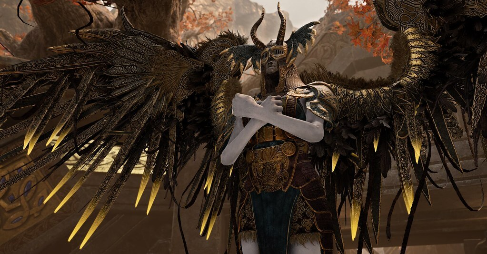
Сигрун
Сигрун , Королева Валькирий, является необязательным боссом в God of War, и ее можно вызвать (через Слезу Царства) после победы над другими восемью Валькириями и размещения их шлемов на тронах, найденных в Совете валькирий.
Сигрун чрезвычайно могущественна, а Мимир говорит, что она самая сильная из всех валькирий, за предполагаемым исключением Фрейи, бывшей королевы валькирий. Свидетельством ее превосходящей силы был тот факт, что она смогла одолеть и запереть других валькирий. Она обладает способностями и наборами движений всех других валькирий (кроме способности вызова). В дополнение к этому, все ее способности усилены и наносят значительно больший урон, чем их аналоги. Победив ее, вы получите трофей «Выбор убитых».
Бой
Как королева валькирий, Сигрун обладает огромным уровнем силы и боевой мощи, намного превосходя другие валькирии, как отмечал Мимир, и, возможно, конкурирует и превосходит только Фрейю, истинную королеву валькирий. Непревзойденная сила Сигрун позволила ей одолеть и запереть других валькирий в тайных покоях Одина.
Сигрун обладает огромным уровнем сверхчеловеческой силы и выносливости и исключительно искусна в использовании своей косы, что позволяет ей выдерживать суровые наказания от Кратоса и Атрея в течение длительного периода времени в гораздо большей степени, чем валькирии, прежде чем она будет побеждена и взорвана. -бить и даже придавить Кратоса, которому пришлось с трудом вырваться наружу.
Обладая способностями всех валькирий, но в гораздо большей степени, а также своими уникальными способностями, Сигрун может эффективно комбинировать и выполнять их в быстрой последовательности, что позволяет ей эффективно удерживать Кратоса и Атрея от предсказания ее следующего хода.
Сигрун обладает огромным уровнем сверхчеловеческой силы и выносливости и исключительно искусна в использовании своей косы, что позволяет ей выдерживать суровые наказания от Кратоса и Атрея в течение длительного периода времени в гораздо большей степени, чем валькирии, прежде чем она будет побеждена и взорвана. -бить и даже придавить Кратоса, которому пришлось с трудом вырваться наружу.
Обладая способностями всех валькирий, но в гораздо большей степени, а также своими уникальными способностями, Сигрун может эффективно комбинировать и выполнять их в быстрой последовательности, что позволяет ей эффективно удерживать Кратоса и Атрея от предсказания ее следующего хода.
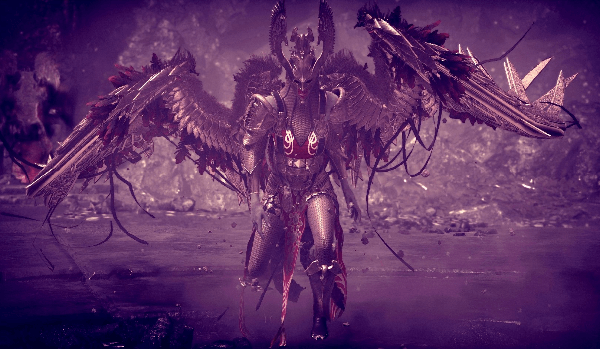